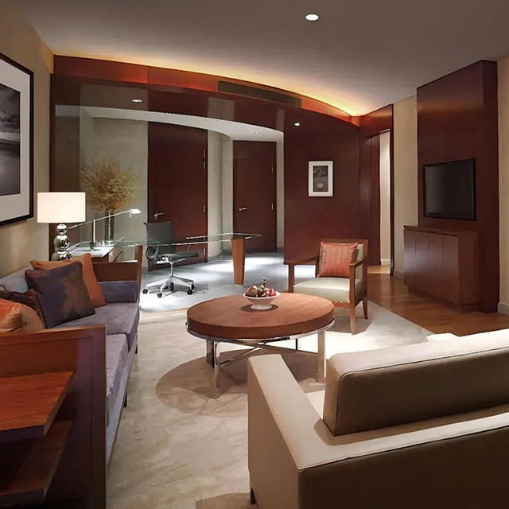
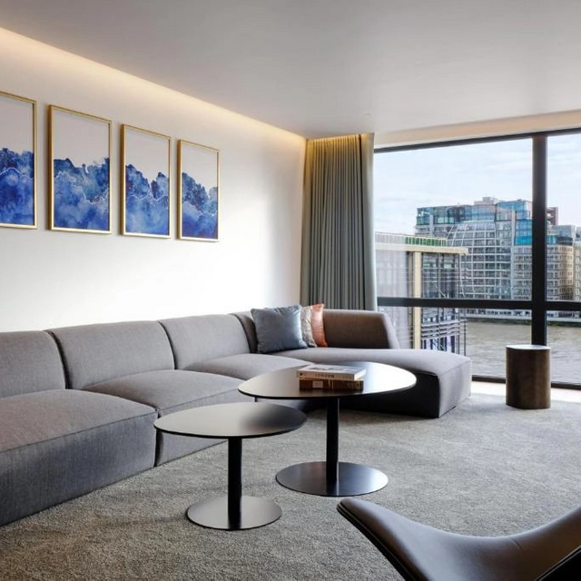
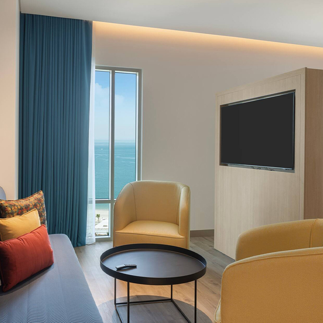
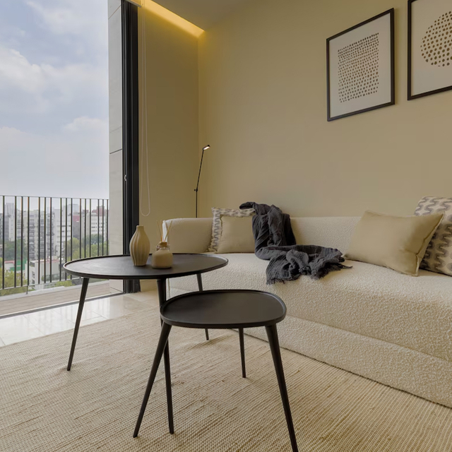

Mesa de Centro Redonda de Madera con Patas Metálicas Finas
Imagen principal del producto — 4 vistas disponibles




La mesa de centro que necesitas si buscas algo que no abrume el salón. Las patas metálicas finas sostienen un sobre de madera natural con un acabado que pide acercar la mano. Ligera, práctica y con el tamaño justo para apoyar el mando, el café o esa revista que estás leyendo a ratos.
El diseño de líneas limpias funciona igual de bien en un salón minimalista que en uno más tradicional. La combinación de madera cálida y metal frío crea un contraste que suma carácter sin robar protagonismo al resto de muebles.
Las patas estrechas (16 mm) no entorpecen el paso ni chocan con el sofá o las butacas. La base queda centrada y estable gracias a la unión soldada en cruz, y los niveladores ocultos corrigen cualquier irregularidad del suelo en segundos.
El sobre está barnizado con un acabado mate que no retiene huellas dactilares ni marcas de vasos. Pasar un paño de microfibra una vez a la semana mantiene la mesa como nueva durante años sin necesidad de productos especiales.
| Sobre | Chapa de madera natural sobre MDF hidrófugo 25 mm, barniz mate al agua |
| Base | Acero con recubrimiento epoxi mate, patas Ø16 mm |
| Diámetros | 60, 80 y 100 cm |
| Altura | 45 cm (centro) o 55 cm (auxiliar de sofá) |
| Peso | 7-12 kg según diámetro |
| Colores metal | Negro mate, dorado, cobre, blanco |
Salón principal: diámetro 100 cm como mesa de centro principal frente al sofá, con espacio para bandeja, libros y elementos decorativos.
Rincón de lectura: diámetro 60 cm y altura 55 cm junto a un sillón orejero, ideal como mesa auxiliar para apoyar una taza y un libro.
Dormitorio amplio: diámetro 80 cm a los pies de la cama o junto a un sillón de lectura, creando un rincón de desayuno dentro de la habitación.
Mínimo. Las patas vienen separadas del sobre y se fijan con 4 tornillos incluidos. El montaje completo no lleva más de 10 minutos y no requiere herramientas especiales, solo un destornillador de estrella.
En terraza cubierta y resguardada de la lluvia directa, sí. Para exteriores totalmente expuestos recomendamos nuestra versión outdoor con barniz marino y herrajes de acero inoxidable 316, disponible bajo consulta.
Sí, dispones de 30 días naturales para devolución. Recomendamos pedir antes las muestras de chapa y metal (envío gratuito en 48 horas) para decidir sobre seguro. La devolución se gestiona sin coste para ti.
Solicita nuestro catálogo completo o consulta precio sin compromiso.
📋 Solicitar catálogo ahora